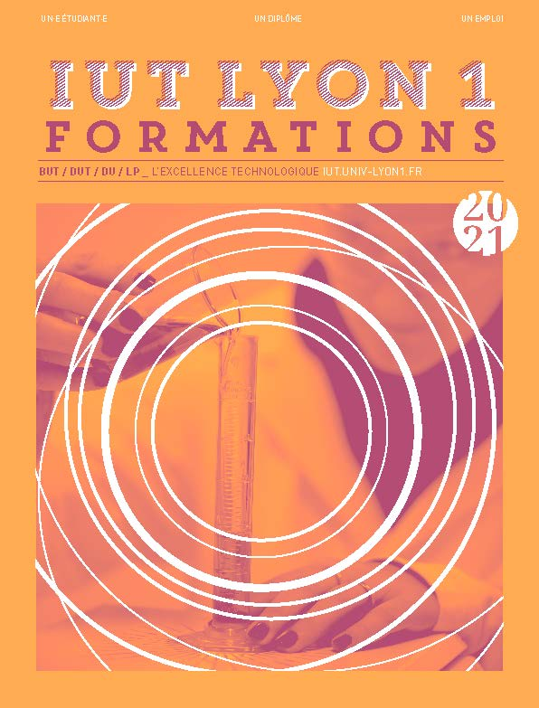

Le BUT (Bachelor Universitaire Technologique) est un diplôme qui remplace le DUT (Diplôme Universitaire Technologique). Il est en place dans les IUT (Instituts Universitaires Technologiques) depuis la rentrée 2021.
Le BUT est un diplôme en trois ans qui permet de poursuivre ses études vers une école d'ingénieur, un master ou de rentrer sur le marché du travail.
Pour être accepté au BUT, il est conseillé de faire un Baccalauréat général options Mathématiques et NSI (Numérique ou science informatique) ou Physique Chimie ou SI (Science de l'ingénieur), ou alors un Baccalauréat STI2D option SIN (Système d'Information et Numérique).
Au début du premier semestre, tous les élèves sont remis à niveau. Les programmes sont une nouveauté pour tous les nouveaux étudiants, ainsi la différence entre le bac général et technologique ne se fait plus sentir. Le rythme de travail demandé est plus élevé qu'au lycée et le travail à la maison est obligatoire.
Le BUT informatique est divisé en quatre parcours :
Sur le site de la Doua, les étudiants ont accès aux parcours suivants : Réalisations d'applications, Déploiement d'applications communicantes et sécurisées, ainsi qu'Administration, gestion et exploitation des données.
A la fin du BUT, les diplômés deviennent techniciens.
Suite aux trois ans du BUT, les étudiants ont la possibilité de rejoindre un :
Peu importe la formation choisie, les étudiants peuvent devenir titulaires d'un BAC +5
Beaucoup de métiers sont accessibles à la sortie du BUT.
Les diplômés peuvent travailler en société de service dans les télécommunications, la grande distribution, le secteur bancaire, au sein de services publics ou pour des éditeurs de logiciels.
Les techniciens peuvent occuper des postes d'assitants ingénieurs, d'analystes, de programmeurs, de développeurs, d'aministrateurs système ou réseaux, de techniciens de maintenance ou de support informatique , et d'autres possibilitées.
Une évolution de carrière vers des postes comme chef de projet est aussi envisageable.
La plaquette avec plus d'information est disponible ici :
Pour télécharger la plaquette de l'IUT